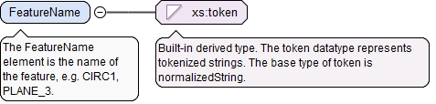

The optional asmPathId attribute is a reference used for locating the id of an assembly path. If the asmPathXId attribute is not used, the asmPathId is a reference to an assembly path in the AsmPaths of the local document. If the asmPathXId is used, the asmPathId is the local id of an external QIF document, and the asmPathXId is a reference to an assembly path in the external QIF document. The assembly path (instantiation chain) unambiguously identifies a model entity within an assembly.
The optional asmPathXId attribute, if used, is a reference to the id of an assembly path in the external document identified by the asmPathId. The asmPathXId must not be used if the asmPathId is not used.
The optional xId attribute is a reference to the id of a QIF object in an external document. A QIF object in an external QIF document can be referenced by using references to two QIF ids: the id of the external document reference of type ExternalQIFDocumentReferenceType found in the local document and the id of the object found in the external document.
Source
<xs:element name="FeatureNominalId" type="QIFReferenceFullType"><xs:annotation><xs:documentation>The FeatureNominalId element is the QIF id of the shape feature nominal.</xs:documentation></xs:annotation></xs:element>
The optional xId attribute is a reference to the id of a QIF object in an external document. A QIF object in an external QIF document can be referenced by using references to two QIF ids: the id of the external document reference of type ExternalQIFDocumentReferenceType found in the local document and the id of the object found in the external document.
Source
<xs:element name="ParentFeatureItemId" type="QIFReferenceType" minOccurs="0"><xs:annotation><xs:documentation>The optional ParentFeatureItemId element is the QIF id of the parent feature item when this feature item is derived from another shape feature item.</xs:documentation></xs:annotation></xs:element>
The FeatureName element is the name of the feature, e.g. CIRC1, PLANE_3.
Diagram

Type
xs:token
Properties
content
simple
Source
<xs:element name="FeatureName" type="xs:token"><xs:annotation><xs:documentation>The FeatureName element is the name of the feature, e.g. CIRC1, PLANE_3.</xs:documentation></xs:annotation></xs:element>
The optional UUID element is a persistent identifier for the shape feature item. If used, it should be generated using a widely accepted UUID generator.
<xs:element name="UUID" type="QPIdType" minOccurs="0"><xs:annotation><xs:documentation>The optional UUID element is a persistent identifier for the shape feature item. If used, it should be generated using a widely accepted UUID generator.</xs:documentation></xs:annotation></xs:element>
The required n attribute is the number of Id elements in this array.
Source
<xs:element name="NotableEventIds" type="ArrayReferenceType" minOccurs="0"><xs:annotation><xs:documentation>The optional NotableEventIds element is a list of the QIF ids of notable events associated with the measurement of this feature.</xs:documentation></xs:annotation></xs:element>
The optional asmPathId attribute is a reference used for locating the id of an assembly path. If the asmPathXId attribute is not used, the asmPathId is a reference to an assembly path in the AsmPaths of the local document. If the asmPathXId is used, the asmPathId is the local id of an external QIF document, and the asmPathXId is a reference to an assembly path in the external QIF document. The assembly path (instantiation chain) unambiguously identifies a model entity within an assembly.
The optional asmPathXId attribute, if used, is a reference to the id of an assembly path in the external document identified by the asmPathId. The asmPathXId must not be used if the asmPathId is not used.
The optional xId attribute is a reference to the id of a QIF object in an external document. A QIF object in an external QIF document can be referenced by using references to two QIF ids: the id of the external document reference of type ExternalQIFDocumentReferenceType found in the local document and the id of the object found in the external document.
Source
<xs:element name="CoordinateSystemId" type="QIFReferenceFullType" minOccurs="0"><xs:annotation><xs:documentation>The optional CoordinateSystemId element is the QIF id of the coordinate system in which the feature is checked or set.</xs:documentation></xs:annotation></xs:element>
The id attribute is the QIF id of the feature, used for referencing.
Source
<xs:complexType name="FeatureItemBaseType" abstract="true"><xs:annotation><xs:documentation>The FeatureItemBaseType is the abstract base type for feature items. A feature item represents a single feature with optional nominal data.</xs:documentation></xs:annotation><xs:complexContent><xs:extension base="FeatureBaseType"><xs:sequence><xs:element name="FeatureNominalId" type="QIFReferenceFullType"><xs:annotation><xs:documentation>The FeatureNominalId element is the QIF id of the shape feature nominal.</xs:documentation></xs:annotation></xs:element><xs:element name="ParentFeatureItemId" type="QIFReferenceType" minOccurs="0"><xs:annotation><xs:documentation>The optional ParentFeatureItemId element is the QIF id of the parent feature item when this feature item is derived from another shape feature item.</xs:documentation></xs:annotation></xs:element><xs:element name="FeatureName" type="xs:token"><xs:annotation><xs:documentation>The FeatureName element is the name of the feature, e.g. CIRC1, PLANE_3.</xs:documentation></xs:annotation></xs:element><xs:element name="UUID" type="QPIdType" minOccurs="0"><xs:annotation><xs:documentation>The optional UUID element is a persistent identifier for the shape feature item. If used, it should be generated using a widely accepted UUID generator.</xs:documentation></xs:annotation></xs:element><xs:element name="NotableEventIds" type="ArrayReferenceType" minOccurs="0"><xs:annotation><xs:documentation>The optional NotableEventIds element is a list of the QIF ids of notable events associated with the measurement of this feature.</xs:documentation></xs:annotation></xs:element><xs:element name="CoordinateSystemId" type="QIFReferenceFullType" minOccurs="0"><xs:annotation><xs:documentation>The optional CoordinateSystemId element is the QIF id of the coordinate system in which the feature is checked or set.</xs:documentation></xs:annotation></xs:element></xs:sequence></xs:extension></xs:complexContent></xs:complexType>